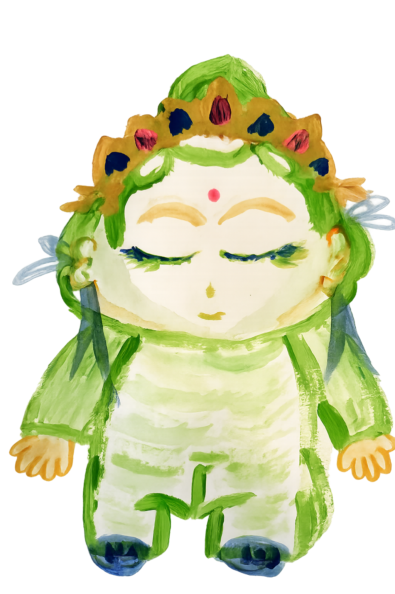
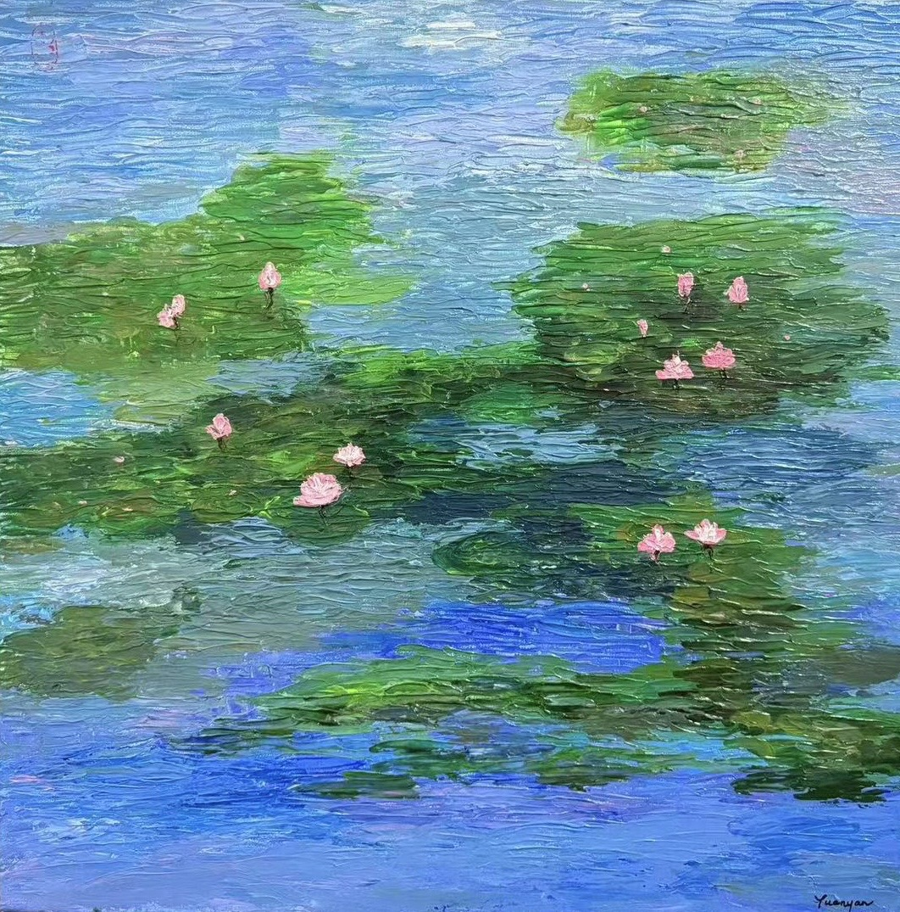

Grant-Making & Project Support
We fund responsible organisations, local communities, and changemakers whose projects align with our charitable mission.
Funding information →We support people, communities, animals, and living environments facing vulnerability, crisis, and hardship.


We work to relieve suffering, strengthen resilience, and contribute to a more balanced and harmonious society and nature.
Our approach connects tangible aid with emotional and psychological support. We believe lasting change grows when urgent needs are met with dignity, communities are trusted, and every form of life is treated with care.
We combine responsible funding, rapid response, and long-term support to create public benefit where it is needed most.
We fund responsible organisations, local communities, and changemakers whose projects align with our charitable mission.
Funding information →In emergencies and collective trauma, we support immediate material needs alongside emotional stability and trauma-sensitive care.
We support animal protection, wildlife rescue, responsible care, and projects that deepen ecological empathy.
We protect the fragile beginning, nourish its potential, and support the conditions in which life can flourish.
Recognise unmet needs without judgement.
Provide practical, emotional, and financial support.
Build resilience, confidence, and local capacity.
Help people and communities move toward lasting well-being.
The mark tells a story of care, growth, wisdom, and liberation.
Every young or vulnerable life carries the potential to grow.
With nourishment and protection, fragile beginnings become enduring strength.
They represent Wu—the first W, meaning “no”—and Wei—the second W, meaning “fear.” Their flowing form also evokes water, which nourishes and sustains life.
We welcome proposals from organisations, communities, and responsible project leaders whose work serves a genuine public benefit.
Explain the need, planned activities, budget, timeline, and intended public benefit.
The Board reviews alignment, feasibility, governance, transparency, and available funds.
Approved grants are documented with deliverables, reporting duties, and permitted use of funds.
Recipients provide financial evidence, milestones, and an account of results.
We publish our governance, remuneration policy, activities, and financial accountability in one easy-to-find place.
Your contribution supports responsible grant-making, humanitarian relief, emotional recovery, animal welfare, and the reasonable operating costs required to deliver this work responsibly.
Online donation details will be published after the foundation’s bank and payment accounts are activated.